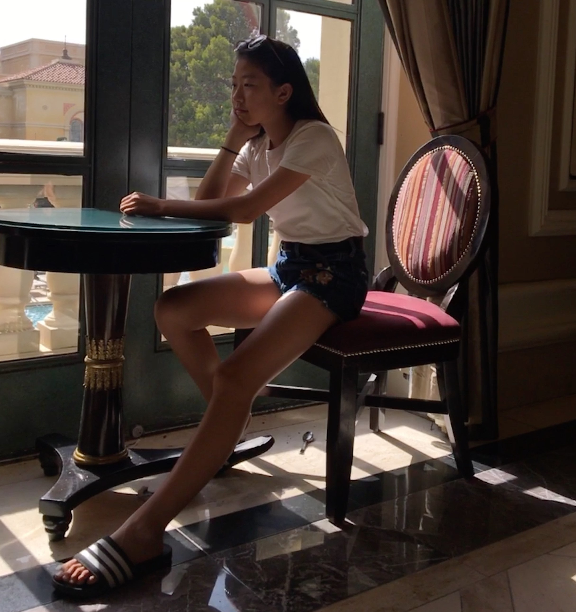

ABOUT ME
WHO AM I?
Hi, I'm Hannah! I am a grade 10 student currently taking the AP Computer Science course. I'm enrolled in the MaCS (Math and Computer Science) program at William Lyon Mackenzie Collegiate Institute.
I love playing sports such as golf, volleyball, ultimate frisbee, and soccer. I also like to watch sports like basketball and hockey. I am a very active person that likes going outdoors, and I prefer the warm summer weather over winter's frigid weather. Although I have more of an athletic personality, I also enjoy computer science and math. In this page, I have written tutorials and material that I have learned while taking the ICS4U0 course.
Some extracurriculars I take part in include taekwondo, golf, and piano. I enjoy all three activities, and they help me relieve the stress built up from school. I also teach at my taekwondo academy, and tutor younger children for english and mathematics. Some of my hobbies I like to do in my spare time is dancing and singing. My volunteer experience ranges from helping at senior centres, to a camp counsellor, and I've also kept score for school sports games.
WHAT TYPE OF PERSONALITY DO I HAVE?
After taking three personality tests, I have discovered that I have traits of a Guardian as well as traits of an Executive. We are seen as direct and honest, loyal, patient, and reliable people. We are dedicated and strong-willed people, who don’t give up because something is too hard or boring. We tend to have strong opinions, and won't change our minds easily because of a disagreement. Therefore we can seem to be stubborn and very inflexible. We hold on to things that are proven, and are proven right, instead of giving chances to situations that have the possibility of being better. ESTJs are quite judgemental. Being direct and honest people, judging is inevitable. ESTJ stands for Extravert, Sensing, Thinking, and Judging. We are good at making quick decisions for impersonal situations, and like to keep things in order by enforcing rules and guidelines. We try to find and work with people who are like minded. We are responsible individuals who like to play their part and get the work done. Therefore we have a good work ethic, and think that power, position, and prestige should be earned by working hard. My personality type tends to learn in environments that involves the question, “Does this solve a problem?” We get more interested in the subject if we can learn deeper and more thoroughly about it. Because we have the capability of understanding things quickly, we can also take in a large amount of information. We like it when examples are connected to real life, and demonstrated using straightforward methods. Hands on and visual aids help us retain the information better, and improve our learning. Since we can easily tolerate stress that comes with high level learning, we tend to learn new material in a condensed short amount of time. All in all, ESTJs are people who are hard-working, dedicated, with a good work ethic.
PHOTOS OF ME
|  |
To contact me, you can email me at: hannah.seyun.kim@gmail.com